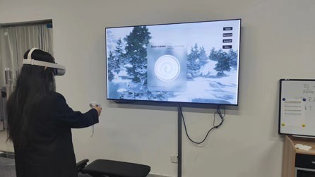
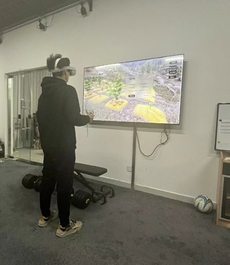
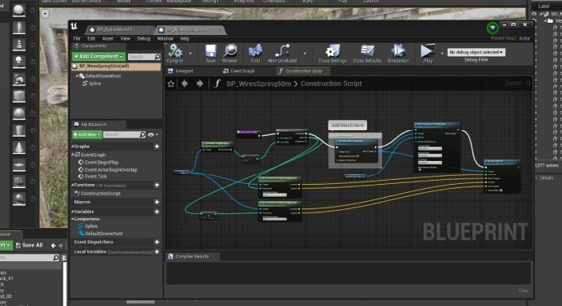

VR audio · Interactive storytelling
Taste of Redemption
Finding humanity through food, place, and sound.

The idea
A young cook encounters a war survivor whose care for food becomes a way of understanding loss, resilience, and everyday life. The experience unfolds through searching for water and ingredients, preparing dishes, and learning from another person.
Sound as a wayfinding tool
Environmental sound is part of the interaction. Positional cues help players locate activity and recognize danger while gathering ingredients—for example, listening for a wild boar. The sound design aims for realism while preserving the playful rhythm of exploration.


Atmosphere with narrative purpose
Environmental sound grounds the player in the setting, while culturally influenced music supports the atmosphere. The goal is to keep the human consequences of war present without overwhelming the cooking interactions.


From exploration to cooking
The interaction moves between gathering, checking ingredients, cutting, cooking, and evaluation. The documented Unreal Engine project includes animation, widget, material, and Blueprint work supporting the VR experience.
See & hear